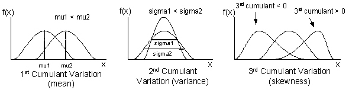

|
||||
|
PROJECTS • NASA RockSat-C • Optical Fiber Cutting Robot • Adaptive Neural Network • Density Shaping • Discrete kCC Control • Statistical Model Predictive Control • Distributed Power System TEACHING COURSES PUBLICATIONS MASTERS THESIS CURRICULUM VITAE CONTACT |
Density Shaping

This project was done with Firdous Salheen. ABSTRACT:
REPORT: PDF CODE: Viskovatov Continued Fractions method for cumulants:
Viskovatov Continued Fractions method for moments:
Calculates cumulants from method described in paper:
Calculates moments from cumulants:
Calculate moments from cumulants using Bell Polynomials:
Takes output from mRiccati and reshapes to form proper H_i matrix:
Solves coupled matrix differential Riccati equations:
Create second characteristic function approximation. Returns H matrix (*1.43):
Main file. Initializes all input, runs each function, plots result.:
|
|||